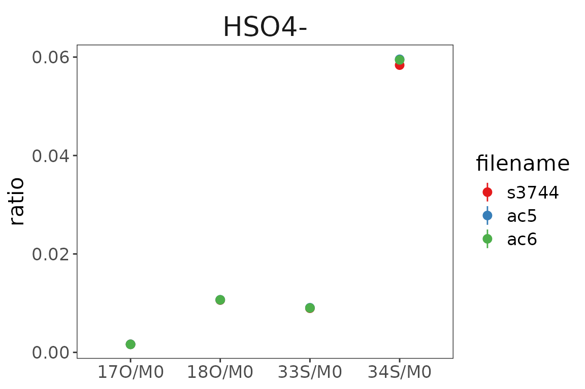

A basic data processing example
Load
# path to a test file included in the isoorbi package
# this file contains data from multiple analyses for the same compound
file_path <- system.file(package = "isoorbi", "extdata", "testfile_flow.isox")
# load data
df <-
file_path |>
# reads .isox test data
orbi_read_isox() |>
# optionally: keeps only most important columns; equivalent to simplify check box in IsoX
orbi_simplify_isox()
# If you wish to read a whole folder of files, you can use the orbi_find_isox() function
# df <- "path_to_your_folder" |> orbi_find_isox() |> orbi_read_isox()Check
Now that the data is loaded, check for satellite peaks, weak isotopocules and outliers.
# check for noise and outliers
df_flagged <- df |>
orbi_flag_satellite_peaks() |> # removes minor signals that were reported by IsoX in the same tolerance window where the peak of interest is
orbi_flag_weak_isotopocules(min_percent = 2) |> # removes signals of isotopocules that were not detected at least in min_percent scans
orbi_flag_outliers(agc_fold_cutoff = 2) # removes outlying scans that have more than 2 times or less than 1/2 times the average number of ions in the Orbitrap analyzer; another method: agc_window (see function documentation for more details)The info messages from these functions suggest that no data was flagged.
Calculate
# define base peak and calculate the results table
df_results <-
df_flagged |>
orbi_define_basepeak(basepeak_def = "M0")|> # sets one isotopocule in the dataset as the base peak (denominator) for ratio calculation
orbi_summarize_results(ratio_method = "sum") # calculates ratios and generates a results tableVisualize
# use a ggplot to plot the data
library(ggplot2)
df_results |>
ggplot() +
aes(
x = sprintf("%s/%s", isotopocule, basepeak),
y = ratio, ymin = ratio - ratio_sem, ymax = ratio + ratio_sem,
color = filename
) +
geom_pointrange() +
scale_color_brewer(palette = "Set1") +
orbi_default_theme() +
labs(x = NULL, y = "ratio") +
facet_wrap(~compound)